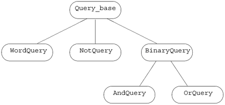
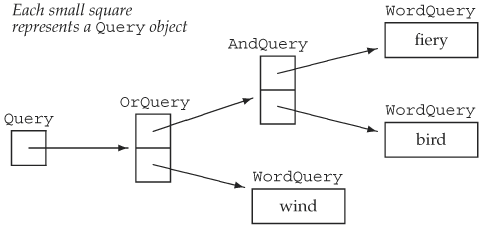

15.9. Text Queries RevisitedAs a final example of inheritance, we'll extend our text query application from Section 10.6 (p. 379). The class we developed there let us look for occurrences of a given word in a text file. We'd like to extend the system to support more complex queries. For illustration purposes, we'll run queries against the following simple story:
Alice Emma has long flowing red hair.
Her Daddy says when the wind blows
through her hair, it looks almost alive,
like a fiery bird in flight.
A beautiful fiery bird, he tells her,
magical but untamed.
"Daddy, shush, there is no such thing,"
she tells him, at the same time wanting
him to tell her more.
Shyly, she asks, "I mean, Daddy, is there?"
Our system should support:
Moreover, these elements can be combined, as in
fiery & bird | wind
Our system will not be sophisticated enough to read these expressions. Instead, we'll build them up inside a C++ program. Hence, we'll evaluate compound expressions such as this example using normal C++ precedence rules. The evaluation of this query will match a line in which fiery and bird appear or one in which wind appears. It will not match a line on which fiery or bird appears alone:
Executing Query for: ((fiery & bird) | wind)
match occurs 3 times:
(line 2) Her Daddy says when the wind blows
(line 4) like a fiery bird in flight.
(line 5) A beautiful fiery bird, he tells her,
Our output will print the query, using parentheses to indicate the way in which the query was interpreted. As with our original implementation, our system must be smart enough not to display the same line more than once. 15.9.1. An Object-Oriented SolutionWe might think that we could use the TextQuery class from page 382 to represent our word queries. We might then derive our other queries from that class. However, this design would be flawed. Conceptually, a "not" query is not a kind of word query. Instead, a not query "has a" query (word query or any other kind of query) whose value it negates. This observation suggests that we model our different kinds of queries as independent classes that share a common base class:
WordQuery // Shakespeare
NotQuery // ~Shakespeare
OrQuery // Shakespeare | Marlowe
AndQuery // William & Shakespeare
Instead of inheriting from TextQuery, we will use that class to hold the file and build the associated word_map. We'll use the query classes to build up expressions that will ultimately run queries against the file in a TextQuery object. Abstract Interface ClassWe have identified four kinds of query classes. These classes are conceptually siblings. Each class shares the same abstract interface, which suggests that we'll need to define an abstract base class (Section 15.6, p. 595) to represent the operations performed by a query. We'll name our abstract class Query_base, indicating that its role is to serve as the root of our query hierarchy. We'll derive WordQuery and NotQuery directly from our abstract base. The AndQuery and OrQuery classes share one property that the other classes in our system do not: They each have two operands. To model this fact, we'll add another abstract class, named BinaryQuery, to our hierarchy to represent queries with two operands. The AndQuery and OrQuery classes will inherit from the BinaryQuery class, which in turn will inherit from Query_base. These decisions give us the class design represented in Figure 15.3 on the next page. Figure 15.3. Query_base Inheritance Hierarchy OperationsOur Query_base classes exist mostly to represent kinds of queries; they do little actual work. We'll reuse our TextQuery class to store the file, build the query map, and search for each word. Our query types need only two operations:
We'll define each of these operations as pure virtual functions (Section 15.6, p. 595) in the Query_base class. Each of our derived classes will have to define its own version of these functions. 15.9.2. A Valuelike HandleOur program will deal with evaluating queries, not with building them. However, we need to be able to create queries in order to run our program. The simplest way to do so is to write C++ expressions to create queries directly. For example, we'd like to be able to write code such as
Query q = Query("fiery") & Query("bird") | Query("wind");
to generate the compound query previously described. This problem description implicitly suggests that user-level code won't use our inherited classes directly. Instead, we'll define a handle class named Query, which will hide the hierarchy. User code will execute in terms of the handle; user code will only indirectly manipulate Query_base objects. As with our Sales_item handle, our Query handle will hold a pointer to an object of a type in an inheritance hierarchy. The Query class will also point to a use count, which we'll use to manage the object to which the handle points. In this case, our handle will completely hide the underlying inheritance hierarchy. Users will create and manipulate Query_base objects only indirectly through operations on Query objects. We'll define three overloaded operators on Query objects and a Query constructor that will dynamically allocate a new Query_base object. Each operator will bind the generated Query_base object to a Query handle: The & operator will generate a Query bound to a new AndQuery; the | operator will generate a Query bound to a new OrQuery; and the ~ operator will generate a Query bound to a new NotQuery. We'll give Query a constructor that takes a string. This constructor will generate a new WordQuery. The Query class will provide the same operations as the Query_base classes: eval to evaluate the associated query, and display to print the query. It will define an overloaded output operator to display the associated query.
Our Design: A Recap
It is important to realize that much of the work in this application consists of building objects to represent the user's query. As illustrated in Figure 15.4 on the following page, an expression such as Figure 15.4. Objects Created by Query Expressions
Query q = Query("fiery") & Query("bird") | Query("wind");
generates ten objects: five Query_base objects and their associated handles. The five Query_base objects are three WordQuerys, an OrQuery, and an AndQuery. Once the tree of objects is built up, evaluating (or displaying) a given query is basically a process (managed for us by the compiler) of following these links, asking each object in the tree to evaluate (or display) itself. For example, if we call eval on q (i.e., on the root of this tree), then eval will ask the OrQuery to which it points to eval itself. Evaluating this OrQuery calls eval on its two operands, which in turn calls eval on the AndQuery and WordQuery that looks for the word wind, and so on.
Objects Created by the Expression
Query("fiery") & Query("bird") | Query("wind");
15.9.3. The Query_base ClassNow that we've explained our design, we'll start our implementation by defining the Query_base class:
// private, abstract class acts as a base class for concrete query types
class Query_base {
friend class Query;
protected:
typedef TextQuery::line_no line_no;
virtual ~Query_base() { }
private:
// eval returns the |set| of lines that this Query matches
virtual std::set<line_no>
eval(const TextQuery&) const = 0;
// display prints the query
virtual std::ostream&
display(std::ostream& = std::cout) const = 0;
};
The class defines two interface members: eval and display. Both are pure virtual functions (Section 15.6, p. 595), which makes this class abstract. There will be no objects of type Query_base in our applications. Users and the derived classes will use the Query_base class only through the Query handle. Therefore, we made our Query_base interface private. The (virtual) destructor (Section 15.4.4, p. 587) and the typedef are protected so that the derived types can access these members. The destructor is used (implicitly) by the derived-class destructors and so must be accessible to them. We grant friendship to the Query handle class. Members of that class will call the virtuals in Query_base and so must have access to them. 15.9.4. The Query Handle ClassOur Query handle will be similar to the Sales_item class in that it will hold a pointer to the Query_base and a pointer to a use count. As in the Sales_item class, the copy-control members of Query will manage the use count and the Query_base pointer. Unlike the Sales_item class, Query will provide the only interface to the Query_base hierarchy. Users will not directly access any of the members of Query_base or its derived classes. This design decision leads to two differences between Query and Sales_item. The first is that the Query class won't define overloaded versions of dereference and arrow operators. The Query_base class has no public members. If the Query handle defined the dereference or arrow operators, they would be of no use! Any attempt to use those operators to access a Query_base member would fail. Instead, Query must define its own versions of the Query_base interface functions eval and display. The other difference results from how we intend objects of the hierarchy to be created. Our design says that objects derived from Query_base will be created only through operations on the Query handle. This difference results in different constructors being required for the Query class than were used in the Sales_item handle. The Query ClassGiven the preceeding design, the Query class itself is quite simple:
// handle class to manage the Query_base inheritance hierarchy
class Query {
// these operators need access to the Query_base* constructor
friend Query operator~(const Query &);
friend Query operator|(const Query&, const Query&);
friend Query operator&(const Query&, const Query&);
public:
Query(const std::string&); // builds a new WordQuery
// copy control to manage pointers and use counting
Query(const Query &c): q(c.q), use(c.use) { ++*use; }
~Query() { decr_use(); }
Query& operator=(const Query&);
// interface functions: will call corresponding Query_base operations
std::set<TextQuery::line_no>
eval(const TextQuery &t) const { return q->eval(t); }
std::ostream &display(std::ostream &os) const
{ return q->display(os); }
private:
Query(Query_base *query): q(query),
use(new std::size_t(1)) { }
Query_base *q;
std::size_t *use;
void decr_use()
{ if (--*use == 0) { delete q; delete use; } }
};
We start by naming as friends the operators that create Query objects. We'll see shortly why these operators need to be friends. In the public interface for Query, we declare, but cannot yet define, the constructor that takes a string. That constructor creates a WordQuery object, so we cannot define the constructor until we have defined the WordQuery class. The next three members handle copy control and are the same as the corresponding members of the Sales_item class. The last two public members represent the interface for Query_base. In each case, the Query operation uses its Query_base pointer to call the respective Query_base operation. These operations are virtual. The actual version that is called is determined at run time and will depend on the type of the object to which q points. The private implementation of Query includes a constructor that takes a pointer to a Query_base object. This constructor stores in q the pointer it is given and allocates a new use counter, which it initializes to one. This constructor is private because we don't intend general user code to define Query_base objects. Instead, the constructor is needed for the operators that create Query objects. Because the constructor is private, the operators had to be made friends. The Query Overloaded OperatorsThe |, & and ~ operators create OrQuery, AndQuery, and NotQuery objects, respectively:
inline Query operator&(const Query &lhs, const Query &rhs)
{
return new AndQuery(lhs, rhs);
}
inline Query operator|(const Query &lhs, const Query &rhs)
{
return new OrQuery(lhs, rhs);
}
inline Query operator~(const Query &oper)
{
return new NotQuery(oper);
}
Each of these operations dynamically allocates a new object of a type derived from Query_base. The return (implicitly) uses the Query constructor that takes a pointer to a Query_base to create the Query object from the Query_base pointer that the operation allocates. For example the return statement in the ~ operator is equivalent to
// allocate a new Not Query object
// convert the resulting pointer to NotQuery to a pointer to Query_base
Query_base *tmp = new NotQuery(expr);
return Query(tmp); // use Query constructor that takes a pointer to Query_base
There is no operator to create a WordQuery. Instead, we gave our Query class a constructor that takes a string. That constructor generates a WordQuery to look for the given string. The Query Output OperatorWe'd like users to be able to print Querys using the normal (overloaded) output operator. However, we also need the print operation to be virtualprinting a Query should print the Query_base object to which the Query points. There's only one problem: only member functions can be virtual, but the output operator cannot be a member of the Query_base classes (Section 14.2.1, p. 514). To obtain the necessary virtual behavior, our Query_base classes defined a virtual display member, which the Query output operator will use:
inline std::ostream&
operator<<(std::ostream &os, const Query &q)
{
return q.display(os);
}
When we write
Query andq = Query(sought1) & Query(sought2);
cout << "\nExecuted query: " << andq << endl;
the Query output operator is invoked. That operator calls
q.display(os)
with q referring to the Query object that points to this AndQuery, an dos bound to cout. When we write
Query name(sought);
cout << "\nExecuted Query for: " << name << endl;
the WordQuery instance of display is called. More generally, a call
Query query = some_query;
cout << query << endl;
invokes the instance of display associated with the object that query addresses at that point in the execution of our program. 15.9.5. The Derived ClassesWe next need to implement our concrete query classes. The one interesting part about these classes is how they are represented. The WordQuery class is most straightforward. Its job is to hold the search word. The other classes operate on one or two Query operands. A NotQuery negates the result of another Query. Both AndQuery and OrQuery have two operands, which are actually stored in their common base class, BinaryQuery. In each of these classes, the operand(s) could be an object of any of the concrete Query_base classes: A NotQuery could be applied to a WordQuery, an AndQuery, an OrQuery, or another NotQuery. To allow this flexibility, the operands must be stored as pointers to Query_base that might point to any one of the concrete Query_base classes. However, rather than storing a Query_base pointer, our classes will themselves use the Query handle. Just as user code is simplified by using a handle, we can simplify our own class code by using the same handle class. We'll make the Query operand const because once a given Query_base object is built, there are no operations that can change the operand(s). Now that we know the design for these classes, we can implement them. The WordQuery ClassA WordQuery is a kind of Query_base that looks for a specified word in a given query map:
class WordQuery: public Query_base {
friend class Query; // Query uses the WordQuery constructor
WordQuery(const std::string &s): query_word(s) { }
// concrete class: WordQuery defines all inherited pure virtual functions
std::set<line_no> eval(const TextQuery &t) const
{ return t.run_query(query_word); }
std::ostream& display (std::ostream &os) const
{ return os << query_word; }
std::string query_word; // word for which to search
};
Like Query_base, WordQuery has no public members; WordQuery must make Query a friend to allow Query to access the WordQuery constructor. Each of the concrete query classes must define the inherited pure virtual functions. The WordQuery operations are simple enough to define in the class body. The eval member calls the query_text member of its TextQuery parameter passing it the string that was used to create this WordQuery. To display a WordQuery, we print the query_word. The NotQuery ClassA NotQuery holds a const Query, which it negates:
class NotQuery: public Query_base {
friend Query operator~(const Query &);
NotQuery(Query q): query(q) { }
// concrete class: NotQuery defines all inherited pure virtual functions
std::set<line_no> eval(const TextQuery&) const;
std::ostream& display(std::ostream &os) const
{ return os << "~(" << query << ")"; }
const Query query;
};
The Query overloaded ~ operator is made a friend to allow that operator to create a new NotQuery object. To display a NotQuery, we print the ~ symbol followed by the underlying Query. We parenthesize the output to ensure that precedence is clear to the reader.
// uses the Query output operator, which calls Query::display
// that funtion makes a virtual call to Query_base::display
{ return os << "~(" << query << ")"
The eval member is complicated enough that we will implement it outside the class body. The eval function appears in Section 15.9.6 (p. 620). The BinaryQuery ClassThe BinaryQuery class is an abstract class that holds the data needed by the two query types, AndQuery and OrQuery, that operate on two operands:
class BinaryQuery: public Query_base {
protected:
BinaryQuery(Query left, Query right, std::string op):
lhs(left), rhs(right), oper(op) { }
// abstract class: BinaryQuery doesn't define eval
std::ostream& display(std::ostream &os) const
{ return os << "(" << lhs << " " << oper << " "
<< rhs << ")"; }
const Query lhs, rhs; // right- and left-hand operands
const std::string oper; // name of the operator
};
The data in a BinaryQuery are the two Query operands and the operator symbol to use when displaying the query. These data are all declared const, because the contents of a query should not change once it has been constructed. The constructor takes the two operands and the operator symbol, which it stores in the appropriate data members. To display a BinaryOperator, we print the parenthesized expression consisting of the left-hand operand, followed by the operator, followed by the right-hand operand. As when we displayed a NotQuery, the overloaded << operator that is used to print left and right ultimately makes a virtual call to the underlying Query_base display.
The AndQuery and OrQuery ClassesThe AndQuery and OrQuery classes are nearly identical:
class AndQuery: public BinaryQuery {
friend Query operator&(const Query&, const Query&);
AndQuery (Query left, Query right):
BinaryQuery(left, right, "&") { }
// concrete class: And Query inherits display and defines remaining pure virtual
std::set<line_no> eval(const TextQuery&) const;
};
class OrQuery: public BinaryQuery {
friend Query operator|(const Query&, const Query&);
OrQuery(Query left, Query right):
BinaryQuery(left, right, "|") { }
// concrete class: OrQuery inherits display and defines remaining pure virtual
std::set<line_no> eval(const TextQuery&) const;
};
These classes make the respective operator a friend and define a constructor to create their BinaryQuery base part with the appropriate operator. They inherit the BinaryQuery definition of display, but each defines its own version of the eval function.
15.9.6. The eval FunctionsThe heart of the query class hierarchy are the eval virtual functions. Each of these functions calls eval on its operand(s) and then applies its own logic: The AndQuery eval operation returns the union of the results of its two operands; OrQuery returns the intersection. The NotQuery is more complicated: It must return the line numbers not in its operand's set. OrQuery::evalAn OrQuery merges the set of line numbers returned by its two operandsits result is the union of the results for its two operands:
// returns union of its operands' result sets
set<TextQuery::line_no>
OrQuery::eval(const TextQuery& file) const
{
// virtual calls through the Query handle to get result sets for the operands
set<line_no> right = rhs.eval(file),
ret_lines = lhs.eval(file); // destination to hold results
// inserts the lines from right that aren't already in ret_lines
ret_lines.insert(right.begin(), right.end());
return ret_lines;
}
The eval function starts by calling eval on each of its Query operands. Those calls call Query::eval, which in turn makes a virtual call to eval on the underlying Query_base object. Each of these calls yields a set of line numbers in which its operand appears. We then call insert on ret_lines, passing a pair of iterators denoting the set returned from evaluating the right-hand operand. Because ret_lines is a set, this call adds the elements from right that are not also in left into ret_lines. After the call to insert, ret_lines contains each line number that was in either of the left or right sets. We complete the function by returning ret_lines. AndQuery::evalThe AndQuery version of eval uses one of the library algorithms that performs setlike operations. These algorithms are described in the Library Appendix, in Section A.2.8 (p. 821):
// returns intersection of its operands' result sets
set<TextQuery::line_no>
AndQuery::eval(const TextQuery& file) const
{
// virtual calls through the Query handle to get result sets for the operands
set<line_no> left = lhs.eval(file),
right = rhs.eval(file);
set<line_no> ret_lines; // destination to hold results
// writes intersection of two ranges to a destination iterator
// destination iterator in this call adds elements to ret
set_intersection(left.begin(), left.end(),
right.begin(), right.end(),
inserter(ret_lines, ret_lines.begin()));
return ret_lines;
}
This version of eval uses the set_intersection algorithm to find the lines in common to both queries: That algorithm takes five iterators: The first four denote two input ranges, and the last denotes a destination. The algorithm writes each element that is in both of the two input ranges into the destination. The destination in this call is an insert iterator (Section 11.3.1, p. 406) which inserts new elements into ret_lines. NotQuery::evalNotQuery finds each line of the text within which the operand is not found. To support this function, we need the TextQuery class to add a member to return the size of the file, so that we can know what line numbers exist.
// returns lines not in its operand's result set
set<TextQuery::line_no>
NotQuery::eval(const TextQuery& file) const
{
// virtual call through the Query handle to eval
set<TextQuery::line_no> has_val = query.eval(file);
set<line_no> ret_lines;
// for each line in the input file, check whether that line is in has_val
// if not, add that line number to ret_lines
for (TextQuery::line_no n = 0; n != file.size(); ++n)
if (has_val.find(n) == has_val.end())
ret_lines.insert(n);
return ret_lines;
}
As in the other eval functions, we start by calling eval on this object's operand. That call returns the set of line numbers on which the operand appears. What we want is the set of line numbers on which the operand does not appear. We obtain that set by looking at each line number in the input file. We use the size member that must be added to TextQuery to control the for loop. That loop adds each line number to ret_lines that does not appear in has_val. Once we've processed all the line numbers, we return ret_lines.
|